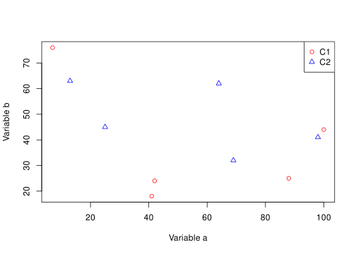
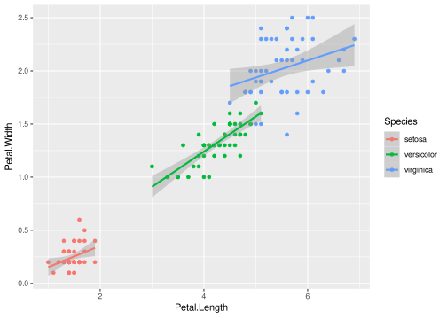
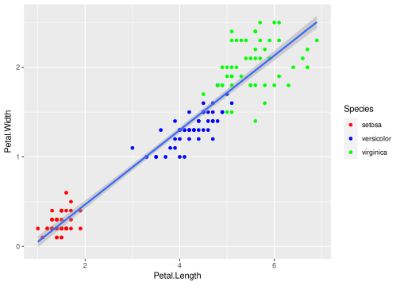

ggplot basics 1
Workshop on ggplot
Lokesh Mano • 10-Aug-2020
1 Base vs grid graphics
1.1 Base
R is an excellent tool for creating graphs and plots. The graphic capabilities and functions provided by the base R installation is called the base R graphics. Numerous packages exist to extend the functionality of base graphics.
We can try out plotting a few of the common plot types. Let’s start with a scatterplot. First we create a data.frame as this is the most commonly used data object.
Now we have a dataframe with two continuous variables that can be plotted against each other.

This is probably the simplest and most basic plots. We can modify the x and y axis labels.

We can change the point to a line.
Let’s add a categorical column to our dataframe.
And then colour the points by category.
# subset data
dfr_c1 <- subset(dfr,dfr$cat == "C1")
dfr_c2 <- subset(dfr,dfr$cat == "C2")
plot(dfr_c1$a,dfr_c1$b,xlab="Variable a",ylab="Variable b",col="red",pch=1)
points(dfr_c2$a,dfr_c2$b,col="blue",pch=2)
legend(x="topright",legend=c("C1","C2"),
col=c("red","blue"),pch=c(1,2))plot

Let’s create a barplot.
1.2 Grid
Grid graphics have a completely different underlying framework compared to base graphics. Generally, base graphics and grid graphics cannot be plotted together. The most popular grid-graphics based plotting library is ggplot2.
Let’s create the same plot as before using ggplot2. Make sure you have the package installed.
library(ggplot2)
ggplot(dfr)+
geom_point(mapping = aes(x=a,y=b,colour=cat))+
labs(x="Variable a",y="Variable b")plot

It is generally easier and more consistent to create plots using the ggplot2 package compared to the base graphics.
Let’s create a barplot as well.
1.3 Saving mages
Let’s take a look at saving plots.
Note This part is just to give you a quick look into how you can save images from Rstudio quickly. The different format of images will be explained in a lecture tomorrow.
1.3.1 Base graphics
The general idea for saving plots is open a graphics device, create the plot and then close the device. We will use png here. Check out ?png for the arguments and other devices.
1.3.2 ggplot2
The same idea can be applied to ggplot2, but in a slightly different way. First save the file to a variable, and then export the plot.
Tip ggplot2 also has another easier helper function to export images.
2 Ggplot basics
Make sure the library is loaded in your environment.
2.1 Geoms
In the previous section we saw very quickly how to use ggplot. Let’s take a look at it again a bit more carefully. For this let’s first look into a simple data that is available in R. We use the iris data for this to start with.
This dataset has four continuous variables and one categorical variable. It is important to remember about the data type when plotting graphs
## Sepal.Length Sepal.Width Petal.Length Petal.Width Species
## 1 5.1 3.5 1.4 0.2 setosa
## 2 4.9 3.0 1.4 0.2 setosa
## 3 4.7 3.2 1.3 0.2 setosa
## 4 4.6 3.1 1.5 0.2 setosa
## 5 5.0 3.6 1.4 0.2 setosa
## 6 5.4 3.9 1.7 0.4 setosaWhen we initiate the ggplot object using the data, it just creates a blank plot!
Now we can specify what we want on the x and y axes using aethetic mapping. And we specify the geometric using geoms. Note that the variable names do not have double quotes "" like in base plots.
2.1.1 Multiple geoms
Further geoms can be added. For example let’s add a regression line. When multiple geoms with the same aesthetics are used, they can be specified as a common mapping. Note that the order in which geoms are plotted depends on the order in which the geoms are supplied in the code. In the code below, the points are plotted first and then the regression line.
plot
There are many other geoms and you can find most of them here in this cheatsheet
2.1.2 Gene counts data
Let’s also try to use ggplot for a “more common” gene counts dataset. Let’s use the merged_data_long or the gc_long object we created in the earlier session.
Note You can notice that the ggplot sorts the factors or vaiables alpha-numerically, like in the case above with Sample_Name.
Tip There is a trick that you can use to give the order of variables manually. The example is shown below:
2.2 Colors
2.2.1 Iris data
First, if we look at the iris data, we can use the categorical column Species to color the points. The color aesthetic is used by geom_point and geom_smooth. Three different regression lines are now drawn. Notice that a legend is automatically created
ggplot(data=iris,mapping=aes(x=Petal.Length,y=Petal.Width,color=Species))+
geom_point()+
geom_smooth(method="lm")plot

If we wanted to keep a common regression line while keeping the colors for the points, we could specify color aesthetic only for geom_point.
2.2.2 GC data
Similarly, we can do the same with the gene counts data.
ggplot(data = gc_long) +
geom_boxplot(mapping = aes(x = Sample_Name, y = log10(count + 1), color = Time))plot
Tip We can also use the fill aesthetic to give it a better look.
2.2.3 Discrete colors
We can change the default colors by specifying new values inside a scale.
ggplot(data=iris,mapping=aes(x=Petal.Length,y=Petal.Width))+
geom_point(aes(color=Species,size=Sepal.Width))+
geom_smooth(method="lm")+
scale_color_manual(values=c("red","blue","green"))plot

Tip To specify manual colors, you could specify by their names or their hexadecimal codes. For example, you can choose the colors based on names from an online source like in this cheatsheet or you can use the hexadecimal code and choose it from a source like here. I personally prefer the hexa based options for manual colors.
2.2.4 Continous colors
We can also map the colors to a continuous variable. This creates a color bar legend item.
ggplot(data=iris,mapping=aes(x=Petal.Length,y=Petal.Width))+
geom_point(aes(color=Sepal.Width))+
geom_smooth(method="lm")plot
Tip Here, you can also choose different palettes for choosing the right contious pallete. There are some common packages of paletes that are used very often. RColorBrewer and wesanderson, if you are fan of his choice of colors ;)
library(wesanderson)
ggplot(data=iris,mapping=aes(x=Petal.Length,y=Petal.Width))+
geom_point(aes(color=Sepal.Width))+
geom_smooth(method="lm") +
scale_color_gradientn(colours = wes_palette("Moonrise3"))plot
Tip You can also use simple R base color palettes like rainbow() or terrain.colors(). Use ? and look at these functions to see, how to use them.
2.3 Aesthetics
2.3.1 Aesthetic parameter
We can change the size of all points by a fixed amount by specifying size outside the aesthetic parameter.
2.3.2 Aesthetic mapping
We can map another variable as size of the points. This is done by specifying size inside the aesthetic mapping. Now the size of the points denote Sepal.Width. A new legend group is created to show this new aesthetic.
3 Histogram
Here, as a quick example, we will try to make use of the different combinations of geoms, aes and color in simple plots.
Let’s take a quick look at some of widely used functions like histograms and density plots in ggplot. Intuitively, these can be drawn with geom_histogram() and geom_density(). Using bins and binwidth in geom_histogram(), one can customize the histogram.
3.1 Density
Let’s look at the sample plot in density.
The above plot is not very informative, let’s see how the different species contribute:
plot
Note The alpha option inside geom_density controls the transparency of the plot.
4 Exercise
Task Make boxplots similar to the one we did here in this exercise for the other three counts (counts_filtered.txt, counts_vst.txt and counts_deseq2.txt).
Tip You can save the plots themselves as R objects. You will get the plot by just calling those objects. You can then add layers to those objects. An example is shown below:
plot_obj_1 <- ggplot(data=iris,mapping=aes(x=Petal.Length,y=Petal.Width))+
geom_point(aes(color=Sepal.Width))+
geom_smooth(method="lm")
plot_obj_1plot
plot
This way, you can create different plot objects for the different counts, we will use them in the later exercises.
5 Session info
## R version 3.6.3 (2020-02-29)
## Platform: x86_64-pc-linux-gnu (64-bit)
## Running under: Ubuntu 20.04.1 LTS
##
## Matrix products: default
## BLAS: /usr/lib/x86_64-linux-gnu/blas/libblas.so.3.9.0
## LAPACK: /usr/lib/x86_64-linux-gnu/lapack/liblapack.so.3.9.0
##
## locale:
## [1] LC_CTYPE=en_US.UTF-8 LC_NUMERIC=C
## [3] LC_TIME=en_US.UTF-8 LC_COLLATE=en_US.UTF-8
## [5] LC_MONETARY=en_US.UTF-8 LC_MESSAGES=en_US.UTF-8
## [7] LC_PAPER=en_US.UTF-8 LC_NAME=C
## [9] LC_ADDRESS=C LC_TELEPHONE=C
## [11] LC_MEASUREMENT=en_US.UTF-8 LC_IDENTIFICATION=C
##
## attached base packages:
## [1] stats graphics grDevices utils datasets methods base
##
## other attached packages:
## [1] wesanderson_0.3.6 forcats_0.5.0 stringr_1.4.0 purrr_0.3.4
## [5] readr_1.3.1 tidyr_1.1.1 tibble_3.0.3 tidyverse_1.3.0
## [9] reshape2_1.4.4 ggplot2_3.3.2 dplyr_1.0.1 captioner_2.2.3
## [13] bookdown_0.20 knitr_1.29
##
## loaded via a namespace (and not attached):
## [1] tidyselect_1.1.0 xfun_0.16 splines_3.6.3 haven_2.3.1
## [5] lattice_0.20-40 colorspace_1.4-1 vctrs_0.3.2 generics_0.0.2
## [9] htmltools_0.5.0 yaml_2.2.1 mgcv_1.8-31 blob_1.2.1
## [13] rlang_0.4.7 pillar_1.4.6 glue_1.4.1 withr_2.2.0
## [17] DBI_1.1.0 dbplyr_1.4.4 modelr_0.1.8 readxl_1.3.1
## [21] lifecycle_0.2.0 plyr_1.8.6 munsell_0.5.0 gtable_0.3.0
## [25] cellranger_1.1.0 rvest_0.3.6 evaluate_0.14 labeling_0.3
## [29] fansi_0.4.1 broom_0.7.0 Rcpp_1.0.5 scales_1.1.1
## [33] backports_1.1.8 jsonlite_1.7.0 fs_1.5.0 farver_2.0.3
## [37] hms_0.5.3 digest_0.6.25 stringi_1.4.6 grid_3.6.3
## [41] cli_2.0.2 tools_3.6.3 magrittr_1.5 crayon_1.3.4
## [45] pkgconfig_2.0.3 ellipsis_0.3.1 Matrix_1.2-18 xml2_1.3.2
## [49] reprex_0.3.0 lubridate_1.7.9 rstudioapi_0.11 assertthat_0.2.1
## [53] rmarkdown_2.3 httr_1.4.2 R6_2.4.1 nlme_3.1-144
## [57] compiler_3.6.3End of document